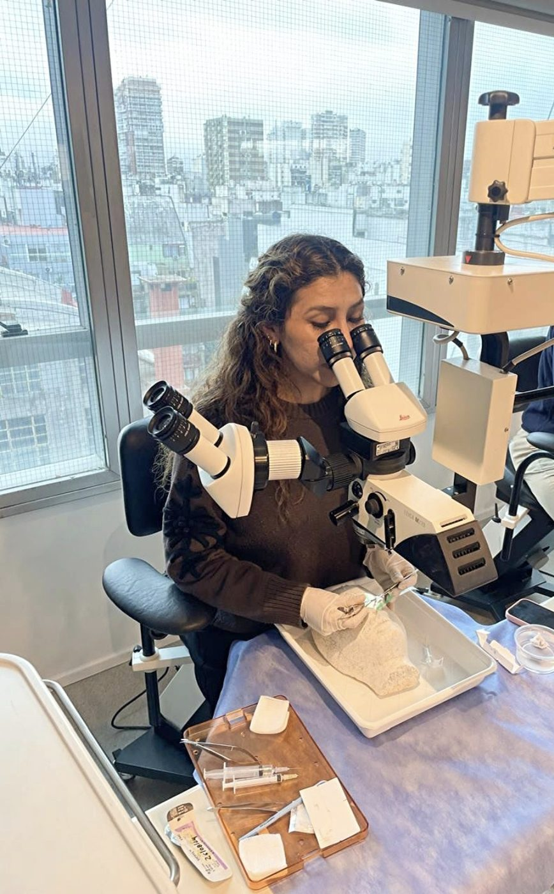
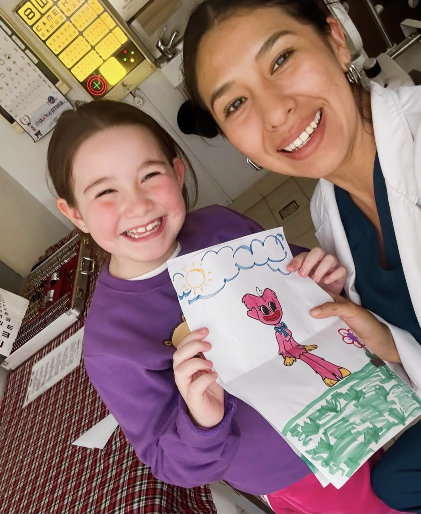
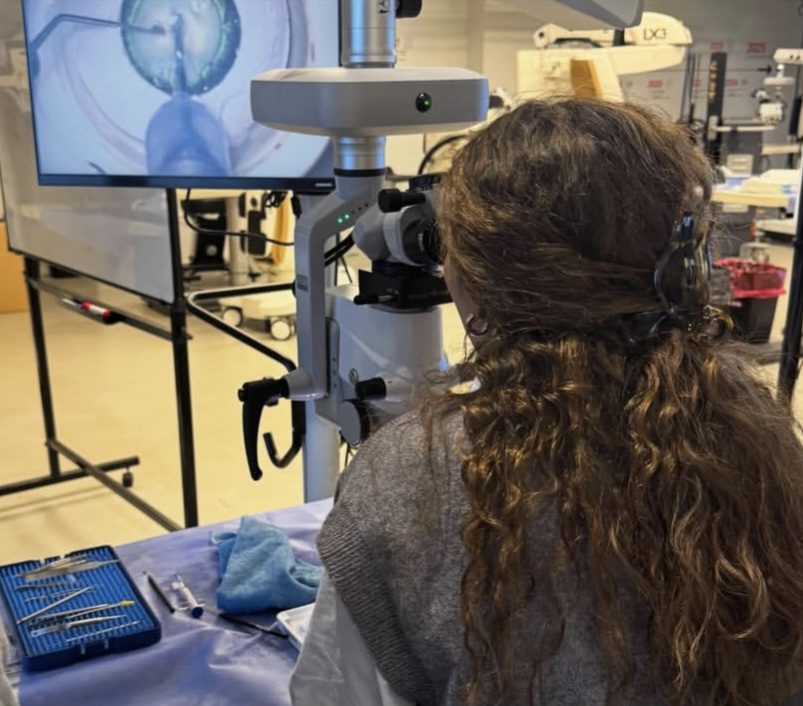
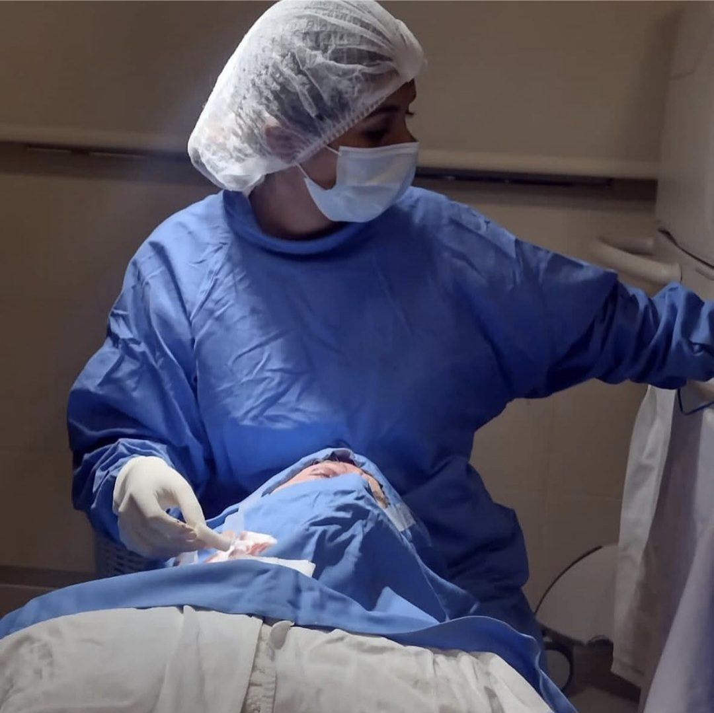

Controles visuales
Chequeos según la edad: recién nacidos, primera infancia, inicio escolar y adolescencia.
Oftalmología pediátrica
Cuidar la mirada de los más chicos, con paciencia, calidez y la tranquilidad que cada familia necesita.


Sobre mí
Soy Ruth Martha Batallanos, médica dedicada a la oftalmología y con especial vocación por la atención de bebés, niñas y niños.
Creo que una consulta oftalmológica infantil tiene que ser una experiencia amable: un espacio donde los chicos se sientan seguros y donde madres, padres y cuidadores puedan hacer todas sus preguntas sin apuro.
Mi objetivo es detectar a tiempo, explicar con claridad y acompañar cada etapa del desarrollo visual.
Ruth Batallanos
Mi enfoque de atención
Cada chico tiene sus tiempos. Adapto el examen a su edad y a cómo se siente ese día.
Explico qué estoy evaluando, qué encontramos y cuáles son los próximos pasos, con palabras simples.
Muchos problemas visuales no dan síntomas. Los controles a tiempo hacen la diferencia.

Oftalmopediatría
Evaluación y seguimiento de la salud visual desde el nacimiento hasta la adolescencia.
Chequeos según la edad: recién nacidos, primera infancia, inicio escolar y adolescencia.
Miopía, hipermetropía y astigmatismo. Indicación y control de anteojos.
Evaluación de la alineación de los ojos y de la visión binocular.
Detección temprana y tratamiento con seguimiento cercano.
Conjuntivitis, alergias y obstrucción del conducto lagrimal en bebés.
Pantallas, lectura, uso de anteojos y cuándo consultar.

Trayectoria
[Institución / Hospital]
[Curso, rotación o institución]
[Universidad]
[Sociedades / asociaciones]
Matrícula: [MN / MP XXXXX]
Ubicaciones de atención
Atiendo en dos zonas para que te quede cómodo. Consultá días y horarios antes de acercarte.
Centro oeste
Consultorios santa fe
Contacto
Escribime y te respondo a la brevedad. Para urgencias oftalmológicas, acudí a una guardia.